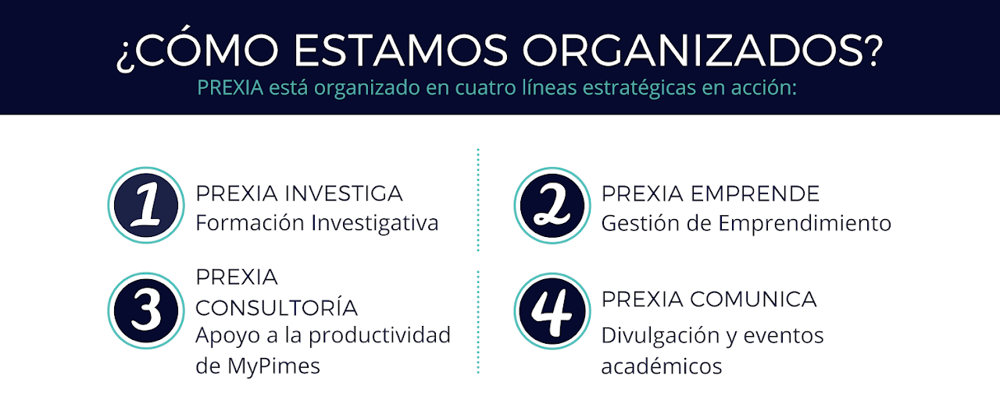

Semillero Prexia - Líneas Prexia DirectorioSemillero PrexiaSemillero Prexia - Líneas Prexia Fuente original migrada: https://sites.google.com/unal.edu.co/prexiaforum/home/l%C3%ADneas-prexia Prexia Consultoría Prexia ComunicaPrexia Investiga Prexia EmprendeORGANIZAN: Fotografías y recursos (13) 